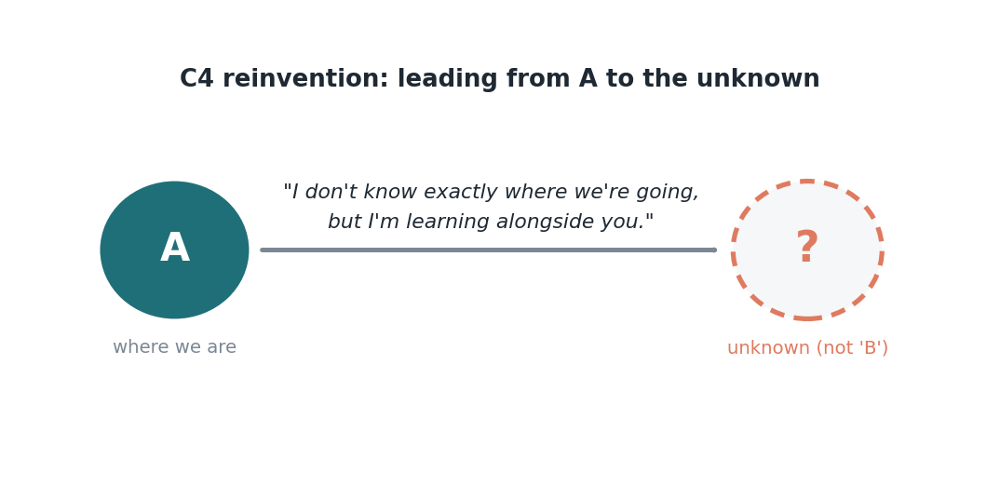

Edisi 9 — Dari change management ke change leadership
Di awal karier saya, saya belajar bahwa manajer yang baik menjalankan perubahan dengan punya semua jawabannya: ini proses barunya, ini pelatihannya, ini caranya kita sampai dari A ke B. Itu berhasil, karena tujuannya sudah diketahui. Yang bikin momen ini beda — dan, jujur aja, lebih berat — adalah kita nggak bisa sepenuhnya lihat B-nya. Agentic AI bukan perpindahan dari A ke B yang jelas. Ini perpindahan dari A ke suatu tempat yang masih kita temukan sambil jalan. Dan itu mengubah bagaimana leadership seharusnya terlihat.
Mode lama itu change management: tujuan yang diketahui, sebuah rencana, dorongan buat kepatuhan. Mode baru itu change leadership: tujuan yang belum diketahui, belajar secara terbuka, membangun kapabilitas sambil jalan. Bedanya bukan cuma soal tampilan. Kamu nggak bisa "roll out" satu tempat yang belum kamu lihat. Kamu cuma bisa memimpin orang menuju ke sana dengan belajar bareng-bareng.

Ini yang membawa saya ke kalimat paling jujur — dan menurut saya paling kuat — yang bisa diucapkan seorang leader sekarang: "Saya nggak tahu persis kita menuju ke mana, tapi saya belajar bareng kalian." Semua insting yang ditanamkan ke kita bilang leader harus proyeksikan kepastian. Tapi kepastian palsu soal tujuan yang belum diketahui bukan leadership; itu teater, dan orang bisa mengenalinya. Mengakui bahwa kamu juga sedang belajar nggak bikin kamu kecil. Itu justru bikin semua orang lain merasa aman buat belajar juga, dan itu satu-satunya cara sebuah tim beneran bergerak ke wilayah yang belum familiar.
Kayak apa sih memimpin dengan cara ini sehari-hari? Artinya memperlakukan eksperimen sebagai bukti dan kesalahan sebagai kurikulum. Waktu ada orang di tim yang coba pakai agent buat satu tugas dan hasilnya cuma setengah berhasil, itu bukan kegagalan yang harus dipendam — itu data yang harus dibagikan. Kerjaan manajer bergeser dari punya semua jawaban ke mendesain eksperimen yang baik, menyingkirkan hambatan, dan memastikan apa yang dipelajari satu orang, dipelajari semua orang. Kamu berubah dari orang yang punya peta, jadi orang yang menjaga ekspedisinya tetap bergerak dan aman.
Saya mau jujur bahwa ini nggak nyaman, terutama buat kita yang tumbuh percaya bahwa kompetensi berarti kepastian. Berdiri di depan tim dan bilang "saya juga lagi cari tahu ini" butuh keberanian tersendiri. Tapi saya jadi percaya ini hal paling jujur yang bisa kita tawarkan sekarang, dan paling murah hati. Ini memberi orang izin buat jadi pemula, dan pemula itu memang persis apa yang kita semua ini, sekarang.
Jadi edisi ini adalah ajakan kecil, khususnya buat sesama manajer: mari kita tukar tekanan buat punya semua jawaban dengan keberanian buat belajar secara terbuka. Kita nggak perlu lihat seluruh jalannya. Kita perlu mencontohkan rasa ingin tahu, berbagi apa yang kita pelajari, menjaga satu sama lain tetap aman, dan mengambil langkah jujur berikutnya bareng-bareng. Itu bukan leadership yang lebih rendah. Di momen kayak gini, itu satu-satunya jenis leadership yang beneran berhasil.
Sumber
- Change leadership vs management; "C4 reinvention" (A→belum diketahui); eksperimen sebagai bukti, kesalahan sebagai kurikulum — McKinsey (7 Agustus 2026).